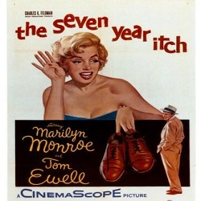

"زندگینامه مرلین مونرو"

"سخنان مرلین مونرو"
"فیلمهای مرلین مونرو"
عاشقپیشه
عاشقپیشه (انگلیسی: Love Happy) یک فیلم کمدی موزیکال به کارگردانی دیوید میلر است که در سال ۱۹۴۹ منتشر شد.
جنگل آسفالت
جنگل آسفالت فیلمی سیاه و سفید در گونهٔ فیلم نوآر به کارگردانی جان هیوستون و محصول سال ۱۹۵۰ آمریکا است.
همهچیز درباره ایو
همه چیز دربارهٔ ایو (به انگلیسی: All About Eve) فیلمی داستانی محصول سال ۱۹۵۰ کمپانی آمریکایی فاکس قرن بیستم است.
برخورد در شب
برخورد در شب (انگلیسی: Clash by Night) یک فیلم درام آمریکایی به کارگردانی فریتس لانگ است که در سال ۱۹۵۲ منتشر شد.
چگونه میتوان با یک میلیونر ازدواج کرد
چگونه میتوان با یک میلیونر ازدواج کرد (انگلیسی: How to Marry a Millionaire) فیلمی در سبک کمدی رمانتیک و کمدی-درام به کارگردانی ژان نگولسکو است.
نیاگارا
نیاگارا (انگلیسی: Niagara) فیلمی به کارگردانی هنری هاتاوی است که در سال ۱۹۵۳ منتشر شد.
آقایان موطلاییها را ترجیح میدهند
آقایان موطلاییها را ترجیح میدهند (انگلیسی: Gentlemen Prefer Blondes) فیلمی در سبک کمدی رمانتیک و موزیکال به کارگردانی هاوارد هاکس است.
